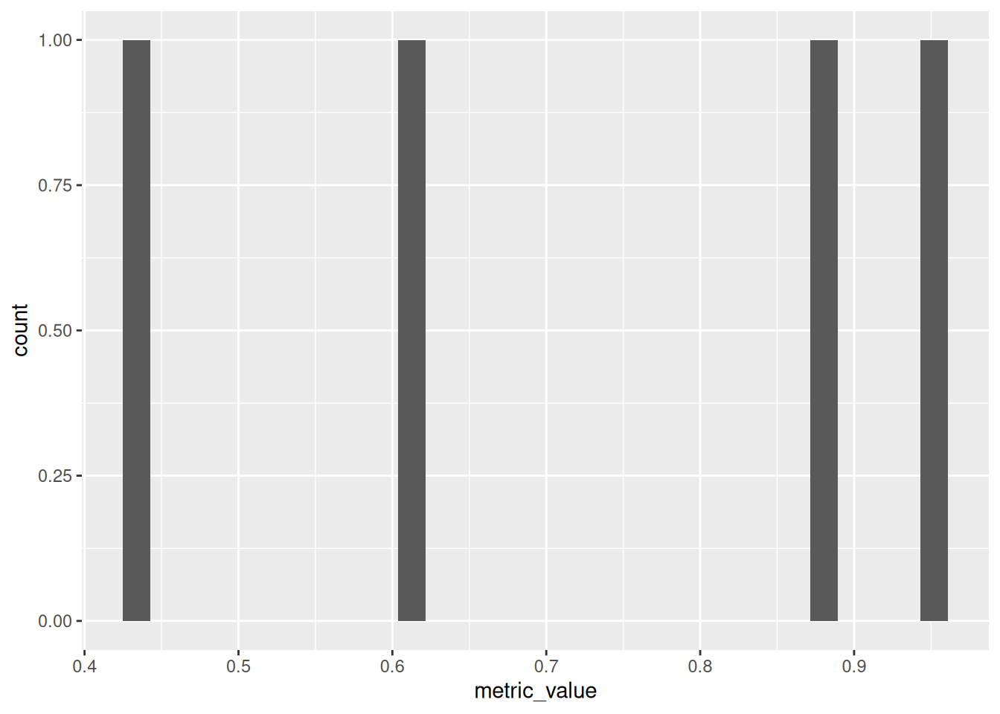

Timed, two hours. Reference only. Honest self evaluation of skill using STRONG / SHAKY / GAP
Task
Rating
Load a CSV and inspect its structure using tidyverse
Strong
Write a dplyr pipeline: filter, select, mutate, groupby, summarize
Shaky
Produce a ggplot2 bar chart with correct labels
Shaky
Run a linear regression, call summary(), and explain each component of the output in writing
Gap
Render a Quarto document with inline R output to HTML
Strong
Load a CSV and inspect its structure using tidyverse
Start time: 14:00
Code
library('tidyverse')
── Attaching core tidyverse packages ──────────────────────── tidyverse 2.0.0 ──
✔ dplyr 1.2.0 ✔ readr 2.2.0
✔ forcats 1.0.1 ✔ stringr 1.6.0
✔ ggplot2 4.0.2 ✔ tibble 3.3.1
✔ lubridate 1.9.5 ✔ tidyr 1.3.2
✔ purrr 1.2.1
── Conflicts ────────────────────────────────────────── tidyverse_conflicts() ──
✖ purrr::%||%() masks base::%||%()
✖ dplyr::filter() masks stats::filter()
✖ dplyr::lag() masks stats::lag()
ℹ Use the conflicted package (<http://conflicted.r-lib.org/>) to force all conflicts to become errors
Code
library('here')
here() starts at /home/teacher/projects/edu-analytics/learning
Code
library('fs')
Code
data_dir <-here('data')data_files_names <-c('school_quality.csv', 'hs_directory.csv', 'school_demographics.csv')# construct a relative to the project root
Rows: 1000 Columns: 12
── Column specification ────────────────────────────────────────────────────────
Delimiter: ","
chr (6): dbn, school_name, report_type, school_type, metric_variable_name, m...
dbl (5): school_year, report_year, number_of_students, metric_value, compari...
lgl (1): metric_score
ℹ Use `spec()` to retrieve the full column specification for this data.
ℹ Specify the column types or set `show_col_types = FALSE` to quiet this message.
Code
# could specify column types but won't for the auditschool_quality_tib
Report grain is a school quality metrics values per school per year. Table is already long with metric_variable column containing metric scoring categories. Further analysis requires choosing pertinent subgroups.
Write a dplyr pipeline: filter, select, mutate, groupby, summarize
Start time: 14:30
The following school quality metric variables are available:
There are 212 (should be 212) variables. Let’s focus on chronic absenteeism. Metrics are probably unique by year, so we’ll also look at the most recent year.
Took a long sojourn into the school quality educator guide to find the key to the race coding, such as chronic_absent_hs_allea 40 chronic_absent_hs_alleb 41 chronic_absent_hs_alleh 42 chronic_absent_hs_allei 43 chronic_absent_hs_allem
Also I can’t find the chronic absent metric for special education. Moving on.
Let’s try a regular expression on the chronic_absent_hs and drop the year filter. By the way there is no real data for report years 2020 and 2021. I think it is carry over data, but haven’t investigated.
We’ll select rows matching a regular expression and group by year.
# A tibble: 1 × 2
report_year avg
<dbl> <dbl>
1 2021 NA
Produce a ggplot2 bar chart with correct labels
Start time: 15:45
Code
data <- school_quality_tib %>%filter(metric_variable_name=='chronic_absent_hs_all') %>%select(metric_value)data %>%ggplot(mapping =aes(x=metric_value)) +geom_histogram()
`stat_bin()` using `bins = 30`. Pick better value `binwidth`.

Create a linear regression, call summary(), and explain each component of the output in writing
Ran out of time for this. I could call lm() and summary()
Render a Quarto document with inline R output to HTML
This document and the whole learning site build without errors. ## Reflection The biggest take away after completing the audit is that I can figure out a lot, but have to make many decisions and then relarn as I working. There isn’t one this is how I do this that I’m comfortable with. Even within one library. # Experiments
Import School Data
HS Directory
Program parsing
Each row of the hs_directory dataset is a school. Schools house one or more programs, which independently enroll students. Programs offer a number of seats available to general education and special education students and may also audition students. Programs can screen for grades and have priorities for enrolling from geographic areas and underrepresented minorities.
We want both one row per school and one row per program data. To get one row per program we